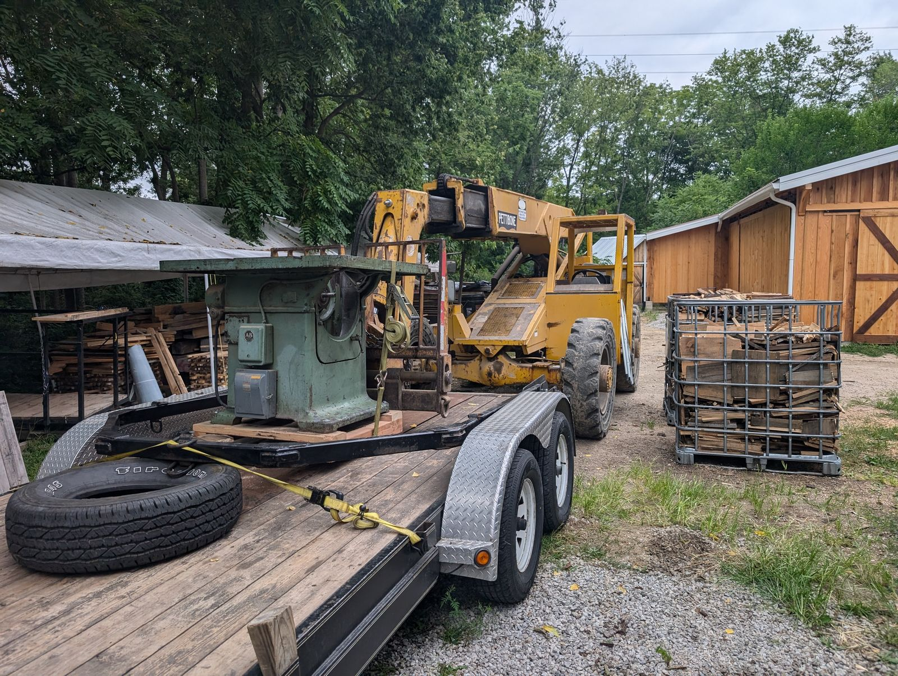
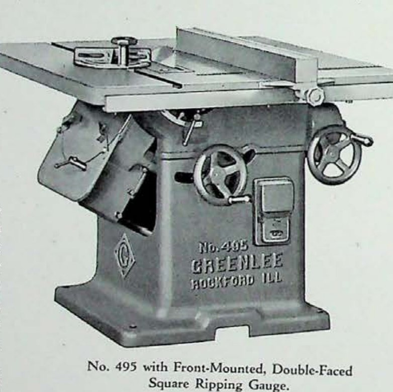
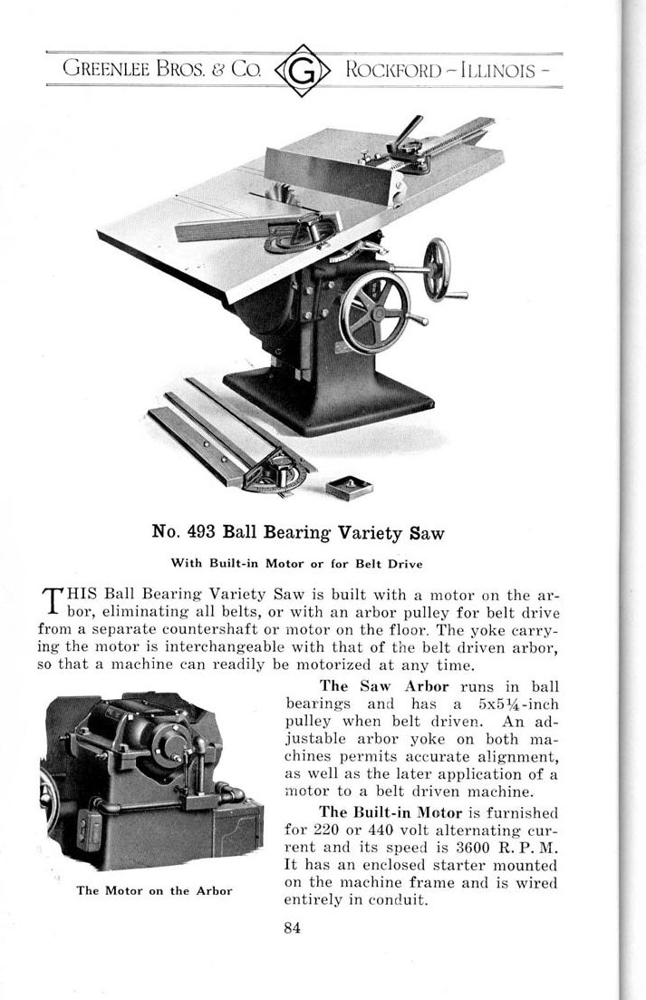
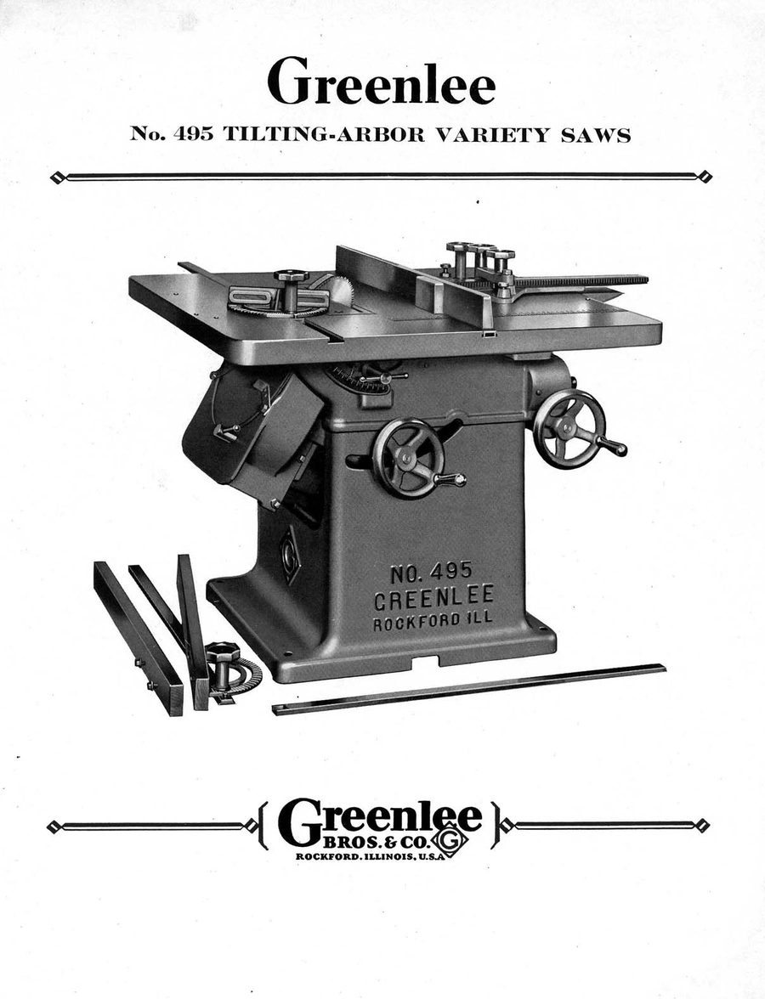
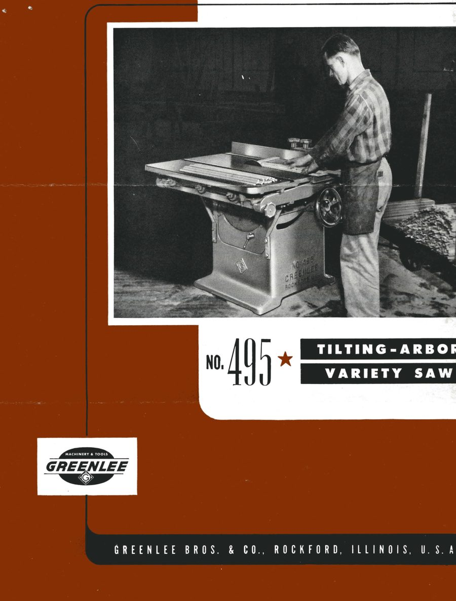
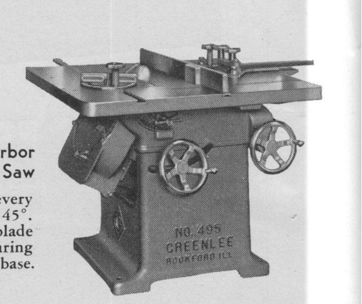

No. 495 Variety Saw
Tilting-arbor precision sawing · 400-Series · May 1961

The machine
Variety saw is the old trade name for a heavy table saw built to do a bit of everything — ripping, crosscutting, dadoes, miters — with the accuracy of a dedicated machine at each. On the 495 the arbor tilts rather than the table, so the work stays flat and supported while the blade leans to the angle. That arrangement, standard today, was the mark of a serious machine in its era.
The one in this collection
Serial 80503 was built in May 1961, and it makes an instructive neighbor for the collection’s other 400-Series saw, the 1910 self-feed rip. Same company, same series, fifty-one years apart — and a different century of thinking. Where the 426 was built to move lumber, the 495 was built to hit a line: micrometer-feel adjustments, an enclosed base, controls placed where a machinist would put them. Mid-century Greenlee was precision Greenlee, and this saw is the collection’s cleanest statement of it.
From the Catalog

“Both machines will handle ripping, cross-cutting, dadoing, mitering, etc., rapidly and accurately… the table is always horizontal and always at the same height.” Greenlee Bulletin No. 495 · April 1930
- Table
- 44″ × 40″
- Maximum blade
- 16″
- Motor
- 5 h.p. · 3,600 r.p.m.
- Net weight
- 1,400 lbs
The bulletin predates this example by three decades — the tilting-arbor pattern was already set in 1930.
Catalog scan courtesy of VintageMachinery.org.
Through the Catalogs
From the fixed-arbor No. 493 to the mid-century No. 495 — the variety saw, perfected.




Every frame links to the full publication in the Paper Archive — scans courtesy of VintageMachinery.org.